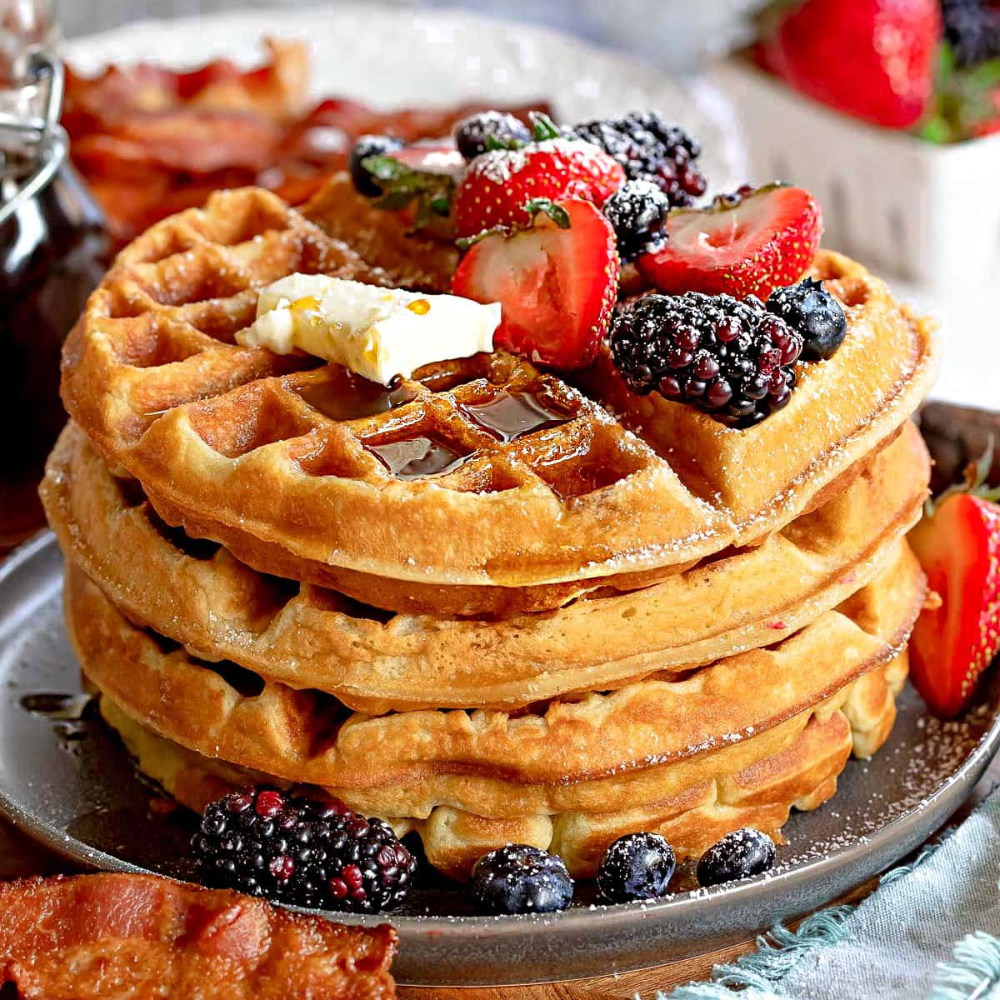

Classic Waffles
Home

The Best Recipe!
The only Waffle recipe you'll ever need! Delicious, light and fluffy waffles with golden,
crispy edges will cause waffle lovers to rejoice! These tasty waffles can be on your table in under 20 minutes!
Weekend brunch calls for a big stack of homemade waffles and my easy waffle recipe delivers every time.
This simple waffle recipe is so easy to make, it takes less than 10 minutes to pull together which gives
your waffle iron just enough to heat up.
Ingredients
- all purpose flour
- granulated sugar
- baking powder and baking soda
- salt
- buttermilk or milk
- eggs
- vanilla extract
- unsalted butter
How To Make This Waffle Recipe
- Preheat. Preheat waffle iron. To keep waffles warm, you’ll want to preheat the oven to 225°F or set on warm setting.
- Dry ingredients. Whisk together all purpose flour, sugar, salt baking powder and baking soda (if using).
- Wet ingredients. Whisk together room temperature milk, eggs, vanilla extract and melted (and cooled) butter. Whisk to combine.
- Combine. Add the wet ingredients to the dry ingredients and stir just until combined.
- Add batter to iron. Grease waffle iron and scoop or ladle the batter onto the preheated waffle iron until batter is within ½ an inch from the edge.
- Cook waffles. Cook until golden brown and waffle iron indicates the waffle is ready.
- Serve and enjoy. Serve with butter, maple syrup, berries and/or whipped cream.